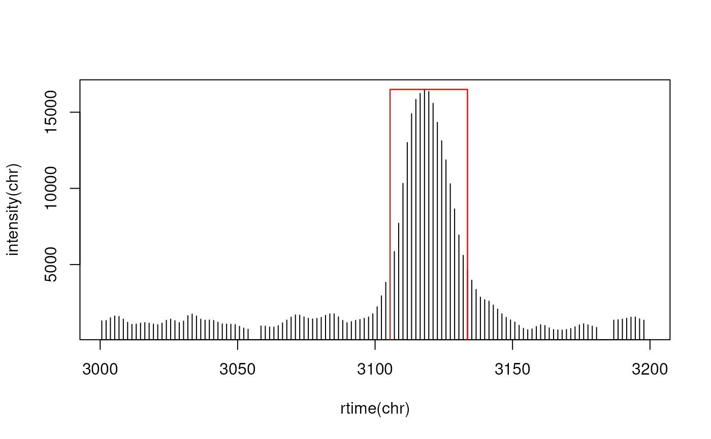

Identify peaks in chromatographic data using matchedFilter
Source:R/do_findChromPeaks-functions.R
peaksWithMatchedFilter.RdThe function performs peak detection using the matchedFilter algorithm on chromatographic data (i.e. with only intensities and retention time).
Usage
peaksWithMatchedFilter(
int,
rt,
fwhm = 30,
sigma = fwhm/2.3548,
max = 20,
snthresh = 10,
...
)Arguments
- int
numericwith intensity values.- rt
numericwith the retention time for the intensities. Length has to be equal tolength(int).- fwhm
numeric(1)specifying the full width at half maximum of matched filtration gaussian model peak. Only used to calculate the actual sigma, see below.- sigma
numeric(1)specifying the standard deviation (width) of the matched filtration model peak.- max
numeric(1)with the maximal number of peaks that are expected/ will bbe detected in the data- snthresh
numeric(1)defining the signal to noise cut-off to be used in the peak detection step.- ...
currently ignored.
Value
A matrix, each row representing an identified chromatographic peak, with columns:
"rt": retention time of the peak's midpoint (time of the maximum signal)."rtmin": minimum retention time of the peak."rtmax": maximum retention time of the peak."into": integrated (original) intensity of the peak."intf": integrated intensity of the filtered peak."maxo": maximum (original) intensity of the peak."maxf"" maximum intensity of the filtered peak."sn": signal to noise ratio of the peak.
See also
matchedFilter for a detailed description of the peak detection method.
Other peak detection functions for chromatographic data:
peaksWithCentWave()
Examples
## Load the test file
faahko_sub <- loadXcmsData("faahko_sub")
## Subset to one file and drop identified chromatographic peaks
data <- dropChromPeaks(filterFile(faahko_sub, 1))
## Extract chromatographic data for a small m/z range
chr <- chromatogram(data, mz = c(272.1, 272.3), rt = c(3000, 3200))[1, 1]
pks <- peaksWithMatchedFilter(intensity(chr), rtime(chr))
pks
#> rt rtmin rtmax into intf maxo maxf sn
#> [1,] 3119.535 3105.45 3133.619 332583.6 668444.6 16496 36129.39 12.33813
## Plotting the data
plot(rtime(chr), intensity(chr), type = "h")
rect(xleft = pks[, "rtmin"], xright = pks[, "rtmax"], ybottom = c(0, 0),
ytop = pks[, "maxo"], border = "red")
